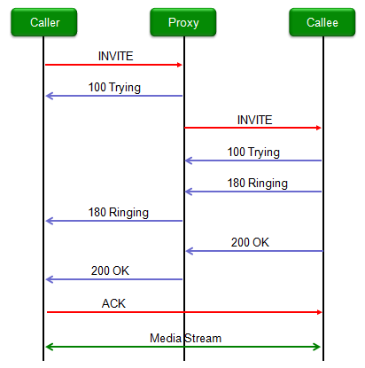
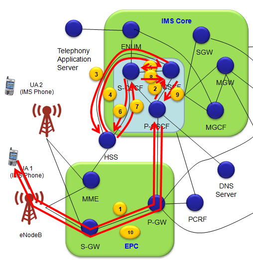
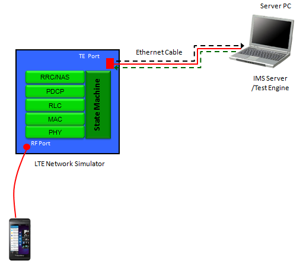

IMS/SIP Home : www.sharetechnote.com
Followings are the topics to be covered in this page.
- Overview
- Some Video Tutorials
- Overall Datapath for IMS
- Setting up a SIP test environment - 2 PCs
- Setting up a SIP test environment - LTE Network Simulator and LTE Device
- SIP Basic Procedure
- SIP Registration Path
- SIP Message Delivery Path
- IMS Registration
- Unauthenticated IMS Registration Attempt
- IPSec Security Association Establishment
- Authenticated IMS Registration
- IMS/SIP Testing
- RCS/RCS-e
- SIP Message Structure Examples
- Appendix : SIP Message Format
IMS (IP Multimedia Subsystem) is one of the terms that I heard most often since I started studying LTE. But this is one of the terms which is still not clear to me -:).
This post is to share my understanding as of now (?) with readers and I will try to put information based on my hands-on experience rather than directly coming from the specification. There may be some part which may not be 100% accurate from the real expert's point of view. I think I keep updating this page very often and very long.
As usual, the first thing I did to know something about IMS when I first heard of it, I put "IMS" in Google and as you may experienced I got a lot of different kind IMS -:). Then I put "LTE IMS" and got pretty much of the result being more relevent to my interest. But I saw from the searched link a lot of material about SIP. Reading through these links, I start asking myself.. "Hmm... Is IMS same as SIP ?".
And then I started search "SIP" in Google. Of course, a lot of result about SIP popped up but I also got almost same amout of the searched result was about "VoIP". Then I asked myself "Hmm... Is SIP as same as VoIP ?".
With the application of transition rule, I thought "Then... Is IMS same as VoIP ?". It took long time for me to get out of this confusion.
The latest version of my understanding about the relationship among IMS, SIP, VoIP is as follows ( I think there should be many other arrows in/out of IMS block). As you see, IMS is sitting on top of everything and it control/use SIP for the various media transfer.
Now let's think about SIP (Session Initiation Protocol). As the name implies, SIP is a kind of signaling protocol which mainly involved in "Initiation" and "Closing" of a media transfer. Once a session is initiated, some other protocols kick in the process to transfer the data part of the media. The specific type of prtocol is determined by the type of media data.
Now let's think about how these IMS chain get involved in LTE SAE structure and I think just one diagram as shown below is good enough for a big picture. (I will put more details later).
Now let's get a little bit deeper into some of sub topics which would give you more detailed and practical information. For the start, I would describe some topics about SIP first. One reason is that SIP is one of the biggest applications of IMS framework and another reason is that I haven't yet found any small IMS test system I can try with.
First, if you are a real beginner for IMS and SIP. I recommend you to see the following video a couple of times and it will give you pretty good big pictures.
- IMS: How does it work?
- Introduction to IMS (Award Solution)
- IMS Video Tutorial
- Ericsson IMS Overview
- What is SIP ?
- What is SIP? (BrinannicTech)
- SIP Trunking Explained(BrinannicTech)
I was sitting in a couple of IMS training course. I noticed the most common questions from both instructors and audience was "How my IMS voice/data get delivered to the other side in this and that kind of situation ?".
The answer never ends and question never stops.. easily eats up the most of training session.
It may be an important question and answer and necessary to understand the details of IMS mechanism, but not easy to come out with "Short and Clear" answer to this kind of questions because there can be so many variation in each cases.
So my intention is not to give you any single solid answer for "IMS Data Path", but to give you some guide line (or logics of thinking) on IMS data delivery.
First, I want you to get yourself familiar with the following diagram.
There are several common rules which can help you to get the answer for data path by yourself.
i) All LTE data and all LTE signaling message has to go through eNodeB at first step.
ii) All LTE data (user data) has to go through S-GW and P-GW. (Note : Both IMS Signaling or IMS Data is regarded as a user data in terms of LTE network. This is an important point that would clear a lot of confusion).
iii) ALL IMS Signaling Message has to go through P-CSCF
iv) IMS Data (e.g, Voice, Video) may not go through any CSCF.
v) For every IMS registration, the IMS message (registration message) go through P-CSCF and S-CSCF talk to HSS to check if the user is IMS service subscriber or not.
vi) When you (IMS phone, UA1) want to talk to another IMS phone (UA3), IMS core has to check if the other party (UA2) is IMS subcriber and is now registered to IMS core. It is I-CSCF's job to check all these status.
vii) When you (IMS phone, UA1) want to talk to another phone, first your network should check whether the other party (phone) is IMS capable phone or a home phone or just a conventional IP phone, it is ENUM's job to check about this kind of status.
viii) Whenever a service is initiated (requested by a UA), CSCF would talk to PCRF if the requested service is allowed for the user.
With these rules in mind (I am pretty sure that I would have missed rules), please print out the diagram above and set a specific scenario (e.g, 'I want to make a call from UA1 to UA2' or from UA1 to UA3 etc) and draw the lines for data path. Don't worry about getting wrong.. you may be wrong in a couple of points but at least more than 70% you would be right if you apply the rule listed above.
Setting up a SIP test environment - 2 PCs
For a long time, I have been looking for a small scale server which is free and can be installed on my PC so that I can have some hands-on experience. As in any learning process, I would never fully understand it without doing it myself, coming across various problems, pulling the hair and asking around every person I know and eventually solving the problems.
After a long waiting and searching, finally I found a handy SIP application server that meets all of my requirements.
The test configuration that I setup is as follows. (For any IP related test, try this kind of two PC test and get familiar with operation/mechanism/troubleshooting first before you try with your mobile device (DUT)).
The software package that I used "3CX Phone System" and you can get it from following links.
3CX Phone System Download : http://www.3cx.com/phone-system/
3CX Phone Download : http://www.softpedia.com/get/Internet/Telephony-SMS-GSM/3CX-VOIP-Phone.shtml
YouTube Introductions :
ii) Installing 3CX MyPhone desktop components
To enable 3CX Phone System to support VoIP call functionality, you need to purchase a license. But you can use the demo license which will be emailed to you after you download the software. The demo license allows VoIP call between only two phones, but it is good enough for this kind of testing. (You can use 'chat' services between clients even without the license).
Installation is pretty straight forward, but setting all the configuration may be a little tricky. If you email me, I can send you ppt slides showing all the configuration for my test setup.
Once you get this working, you can try various things like texting, VoIP and even Video call and capturing the IP traffic with Wireshark and these logs can be your text book.
Setting up a SIP test environment - LTE Network Simulator and LTE Device
Following shows the test setup with LTE Network Simulator and LTE Device. (In this case, I used the network interface created by the UE as SIP server port and I configured PDN IP address transmitted by the network simulator to be 192.168.1.231.

Most of basic SIP protocol goes as the combination of the procedures explained above. This shows an example showing the interplay of these procedures.
If you see the following sample sequence, you will find various example ranging from very simple and pretty much complicated ones.
Following Wireshark capture is the one that I captured using the test configuration described in previous section. (I you want the full capture file (pcap file) for this, send me an email).
Following is the filtered log showing only signaling part of VoIP calls that I did.
Following is the one showing both signaling part and data traffic parts showing various protocols being used in media transfer.
Following illustration is based on the IMS registration sequence posted on EventHelix. I converted the sequence diagram into IMS architecture diagram so that you can get some better idea of interplay of each components.
Try to follow the big picture and understand overall logic. The very detailed sequence and parameters may vary depending on the network organization. So the log you collected from a specific network may be different from what you see here. If you have a log from a test equipment, it may be simpler than what you see here.
In Full IMS registration, it can be split into three major process as shown below.
- Unauthenticated IMS Registration Attempt
- IPSec Security Association Establishment
- Authenticated IMS Registration

< Unauthenticated IMS Registration Attempt >
Following is the first main procedure - Unauthenticated IMS Registration Attempt.
(1) : REGISTER (Path : UA1 --> eNodeB --> S-GW --> P-GW --> P-CSCF)
REGISTER sip:hims.net SIP/2.0,
Via: SIP/2.0/UDP UE-IP;branch=0abab,
Route: sip:[P-CSCF-IP], // Route specifies the IP of next node for this REGISTER to reach. In this case, 'Next Node' is P-SSCF
Max-Forwards: 20,
From: <sip:name@hims.net>;tag=abbb,
To: <sip:name@hims.net>,
Contact: <sip:[UE-IP]>;expires=90000,
Call-ID: ababab,
CSeq: 25 REGISTER,
Security-Client: port-s, port-c,
Authorization: Digest username = name.private@hims.net,
Content-Length: 0
Note : Since this step is 'REGISTER' process, 'Authentication' parameter does not carry any specific information for Authentication algorithm. Following is one example that I captured from test equipment.
Authorization: Digest uri="sip:test.3gpp.com",
username="001010123456789@test.3gpp.com",
response="",
realm="test.3gpp.com",
nonce=""
(2): DNS Query (Path : P-CSCF --> DNS Server)
DNS Query for I-CSCF IP
(3): DNS Response (Path : DNS Server --> P-CSCF)
DNS Response for I-CSCF IP
(4) : REGISTER (Path : P-CSCF --> I-CSCF)
REGISTER sip:hims.net SIP/2.0,
Via: SIP/2.0/UDP pcscf1.vims.net;branch=0aab1,
Via: SIP/2.0/UDP UE-IP;branch=0abab,
Max-Forwards: 19,
From: <sip:name@hims.net>;tag=abbb,
To: <sip:name@hims.net>,
Contact: <sip:[UE-IP]>;expires=90000,
Call-ID: ababab,
CSeq: 25 REGISTER,
Content-Length: 0,
Authorization: Digest username = name.private@hims.net integrity protection:no
(5) : User Authorization Request (Path : I-CSCF --> HSS)
(6) : User Authorization Answer (Path : HSS --> I-CSCF)
S-CSCF Name,
S-CSCF Capabilities
(7) : REGISTER (Path : I-CSCF --> S-CSCF)
REGISTER sip:hims.net SIP/2.0,
Via: SIP/2.0/UDP icscf1.hims.net;branch=0aab2,
Via: SIP/2.0/UDP pcscf1.vims.net;branch=0aab1,
Via: SIP/2.0/UDP UE-IP;branch=0abab,
Route: sip:scscf1.hims.net,Max-Forwards: 18,
From: <sip:name@hims.net>;tag=abbb,
To: <sip:name@hims.net>,
Contact: <sip:[UE-IP]>;expires=90000,
Call-ID: ababab,
CSeq: 25 REGISTER,
Content-Length: 0,
Authorization: Digest username =name.private@hims.net integrity protection:no
(8) : Multimedia Authentication Request (Path : S-CSCF --> HSS)
(9) : Multimedia Authentication Response (Path : HSS --> S-CSCF)
- Select Authentication vectors
- Save the selected authentication vector
S-CSCF does followings at this point
(10) : 401 UnAuthorized (Path : S-CSCF --> I-CSCF)
WWW-Authenticate: nonce=RAND-AUTN, ck, ik,
Via: icscf1, pcscf1, ue-ip
Note : This message will tell UE to initiate 'REGISTER' with authentication based on the information under 'WWW-Authenticate'. An example is as follows.
WWW-Authenticate: Digest realm="test.3gpp.com",
nonce="qlWqVapVqlWqVapVqlWqVUUQA5HEt9VVZ3t1TM221cg=",
qop="auth",
opaque="MTcyMjU3ODA2NDo=SU1TLVNJUCBTZXJ2ZXI=",
algorithm=AKAv1-MD5
(11) : 401 UnAuthorized (Path : I-CSCF --> P-CSCF)
- Save CK and IK
- allocate P-CSCF side client and server ports
WWW-Authenticate: nonce=RAND-AUTN, ck, ik,
Via: pcscf1, ue-ip
P-CSCF does followings at this point
(12) : 401 UnAuthorized (Path : P-CSCF --> P-GW --> S-GW --> eNodeB --> UA1)
WWW-Authenticate: nonce=RAND-AUTN,
Security-Server: port-s, port-c
< IPSec Security Association Establishment >
(1) : IPSec SA for UE Initiated Requests
UE-Client -> P-CSCF-Server
(2) : IPSec SA for Responses to UE
UE-Server <- P-CSCF-Client
(3) : IPSec SA for P-CSCF Initiated Requests
UE-Server <- P-CSCF-Client
(4) : IPSec SA for Responses to P-CSCF
UE-Client -> P-CSCF-Server
< Authenticated IMS Registration >

(1) REGISTER (Path : UA1 --> eNodeB --> S-GW --> P-GW --> P-CSCF)
Via: UE-IP;UE-Server-Port,
Route: pcscf1, pcscf-server-port,
Contact: UE-IP ue-server-port,
Authorization: Digest username = name.private@hims.net response=RES
Note : Since this step is for Registration with Authentication, 'Authentication' parameter carries detailed information needed for the authentication algorith as shown below. This step is triggered by '401 UnAuthorized' in previous registration step.
Authorization: Digest username="001010123456789@test.3gpp.com",
realm="test.3gpp.com",
uri="sip:test.3gpp.com",
qop=auth,
nonce="qlWqVapVqlWqVapVqlWqVUUQA5HEt9VVZ3t1TM221cg=",
nc=00000001,
cnonce="11259375",
algorithm=AKAv1-MD5,
response="a3f549b13f477562f4445b7277cd83c1",
opaque="MTcyMjU3ODA2NDo=SU1TLVNJUCBTZXJ2ZXI="
(2) REGISTER (Path : P-CSCF --> I-CSCF)
Via: pcscf1 UE-IP;UE-Server-Port,
Contact: UE-IP ue-server-port,
Authorization: Digest username = name.private@hims.net response=RES integrity protection: yes,RES
(3) User Authorization Request (Path : I-CSCF --> HSS)
name.private@hims.net
(4) User Authorization Response (Path : HSS --> I-CSCF)
S-CSCF Name,
S-CSCF Capabilities
(5) REGISTER (Path : I-CSCF --> S-CSCF)
Via: icscf1 pcscf1 UE-IP;UE-Server-Port,
Contact: UE-IP ue-server-port,
Authorization: Digest username =name.private@hims.net response=RES integrityprotection: yes,RES
(6) Server Assignment Request (Path : S-CSCF --> HSS)
name.private@hims.net
(7) Server Assignment Request (Path : HSS --> S-CSCF)
(8) 200 OK (Path : S-CSCF --> I-CSCF)
(9) 200 OK (Path : I-CSCF --> P-CSCF)
(10) 200 OK (Path : P-CSCF --> P-GW --> S-GW --> eNodeB --> UA1)
As for any other function, for IMS/SIP testing you can think of two different approaches. One is with Live Network and the other with Lab test equipment. In this section, I would only talk about the test with Lab test equipment, not with Live Air.
The most common Lab Test setup would be as shown below. You need an equipment which can emulate Radio Access Network/NAS and then connect the equipment to IMS Server/Test Engine.
As far as I know, most of current (as of Apr 2013) LTE network simulator (UE Test Equipment) have their own embedded IMS Server. But I haven't seen any of those embedded IMS server which is full-fledged to provide enough capability/flexibility to test all the detailed IMS/SIP features.
On the other hand, there is a couple of company who provide IMS Server/Test Engine which provides high flexibility and very side test capability, but these company does not provide their own Access Network/NAS emulator.
So ideally the best solution would be to combine a Access Network emulator from one company with IMS Server from another company, but in reality interfacing the two solution from two different companies would not be easy, even though it is not impossible.
< A Tip on Test Equipment Selection >
Theoretically, 'LTE Network Simulator' part should not be a critical factor as long as it has basic state machine alowing "UE to camp on and establish EPS bearer", but in practice it is not as simple as it sounds. It is mainly because there can be many different paths to 'EPS bearer establishment for IMS' and Each UE may require different variations of statemachine for the process. For example, some UE require only Default EPS bearer with IPv4, some UE would require the estabilishement of two default EPS bearer and use the second one for IMS and some other UE would require the establishement of one default and one dedicated EPS bearer and use the dedicated bearer for IMS.. there can be many other variations. So the LTE Network Simulator should have very flexible statemache. According to my experience, most of 'LTE Network Simulator' in the market falls into one of the following options.
Option 1 : Script or Statemachine Generation Tool based.
Option 2 : Call Box Based (Ready made statemachine)
In theory, it should be possible to implement any statemachine (however complex it is) with Option 1, but "be possible to do something" and "be easy (in practical sense) to do something" is different. Option 1 can be useful for creating test cases for radio stack only (e.g, those like 36.523) but it would be difficult for one or two persons to implement complicated statemachine for application test like IMS.
Usually Option 2 tend to provide more flexible (complicated) statemachine comparing to Option 1, so it can be a better fit for the application test. However, you have to verify the flexibility of the equipment before you decide to pick up since each equipment vendor supports different level of flexibility.

< General Test Methodology >
In terms of test methodology, there can be two levels of testing as listed below.
- Entry level functionality test
- Detailed protocol stack test
- Media Quality Test/Analysis (e.g, Voice Quality, Video Quality test)
In Entry Level functionality test, you would try following things (I think most of Access Network Simulator Vendors are TRYING to provide all these functionality, even thought I haven't seen any equipment vendor which support all of these as of now (as of Mar,2013).
- Turn on IMS functions on UE and see if IMS registration properly go through.
- Send SMS over IMS and see if the message gets successfully delivered to the other party.
- Make a Voice Call (VoLTE) from UE or from Test Equipment and see if the call is properly setup.
- Make an Emergency Call (VoLTE) from UE or from Test Equipment and see if the call is properly setup
In IMS protocol stack test, thre can be an entry level and advanced level testing as well. In entry level testing, you can simply Ignore, Reject or Send Error messages as illustrated below and see how UE act in each of those cases. In advanced level, you would modify the IMS protocol state machine itself and teak each detailed parameters of each message and see how UE respond to each of those variations.
As more and more people gets interested in IMS more than the simple SMS, I am hearing more and more about RCS.
RCS stands for 'Rich Communication Service'. You will find quite a lot of material by googling it, but it would be hard to get a 'short/tangible' understanding of what it really is. Is RCS a kind of specification ? Is it a kind of software package ? Is it a kind of name for a technology ?
Confused !!!...
Whenevery you get confused by anything when you try to catching up the new technology/words, one of the best way would be to refer to any person/document from which/who the word/technology is orignated.
It seems that the origination of RCS/RCS-e comes from GSMA. So I decided to dig things from GSMA.
A simple/clear definition of RCS/RCS-e from http://www.gsma.com/rcs-faqs/
- RCS (Generic Term) = the generic term used to describe Rich Communication Services
- RCS (Special Term) = Project name for the GSMAs promotion of rich communications among MNOs (Rich Communications Services).
- RCS-e = Technical spec name for the preferred methods of providing first stage interoperability among MNOs (Rich Communication Services enhanced). RCS-e is the latest version of Rich Communication Suite (RCS) which will enable mobile phone end users to use instant messaging (IM), live video sharing and file transfer across any device on any network operator
Another good definition of RCS can be found at Wikipedia (http://en.wikipedia.org/wiki/Rich_Communication_Suite) as follows.
- RCS initiative is an industry effort focused on the use of IMS for providing mobile phone communication services. "Rich Communication" in itself is meaningless jargon, which refers to the use of more than just voice for communication, but has long been touted as a benefit of IMS. It is to be noted that much of the capability of RCS is already available from Internet service providers.
If you want some intuitive 'feeling' about this, go to http://www.youtube.com/user/RCSChannel
As is described above, RCS initiative is a "joint efffort in the industry". It implies that many stakeholders in the industry (both Network Operators and UE manufacturer) should join in the effort and come out with some 'agreed rule (specification)' and implement them according to the specification. I don't know exactly how many Network Operators and UE makers are participating in this joint effort, but seems that there would be over 80 companies (Network Operators + UE Maker).
There are very wide spectrum of technicalogies specified in the RCS, but a couple of Core technology that almost everybody talks about RCS are as follows.
i) Enhanced Phonebook : This phone book give you not only simple phone numbers but also presence information and service capability. With these information, you can initiate the communication by selecting one of the available communication types. You can use the Presence information to communicate any personalized contact features including photo, availability and free text
ii) Enhanced Messaging : This enables a large variety of messaging options like SMS, MMS, Instant Messaging and buddy related communication history.
iii) Enriched Call : This enables multimedia contents sharing during the voice call. (e.g, video share, image share and file transfer)
You can find the detailed Technical Specification of RCS-e from
If you are interested specifically on how to test these features, please refer to the test specification at GSMA site.
RCE IOT001 RCS-e Test Cases.
SIP Message Structure - Examples
Note : This examples is showing one of my log being interpreted according to the example from E-multimedia : http://www.siptutorial.net/SIP/request.html. For the part which is not described in this tutorial, I refered to RFC 3261.
[ Line 1 ] REGISTER sip:ims.sharetechnote.com SIP/2.0
[ Line 2 ] Via: SIP/2.0/UDP 192.168.1.15:5060;branch=z9hG4bK3933794001smg;transport=UDP
[ Line 3 ] Expires: 3600
[ Line 4 ] Route: <sip:192.168.1.2:5060;lr>
[ Line 5 ] P-Access-Network-Info: 3GPP-E-UTRAN-FDD;utran-cell-id-3gpp=0000054200000000
[ Line 6 ] User-Agent: SP VOIP IMS 2.0
[ Line 7 ] Privacy: none
[ Line 8 ] Contact: <sip:+11234567890@192.168.1.15:5060>
[ Line 9 ] Authorization: Digest
username="001010123456789@ims.sharetechnote.com",realm="ims.sharetechnote.com",uri="sip:ims.sharetechnote.com",nonce="",response=""
[ Line 10 ] From: <sip:+11234567890@ims.sharetechnote.com>;tag=2504745718
[ Line 11 ] To: <sip:+11234567890@ims.sharetechnote.com>
[ Line 12 ] Call-ID: 500949143@192.168.1.15
[ Line 13 ] CSeq: 1 REGISTER
[ Line 14 ] Max-Forwards: 70
[ Line 15 ] Content-Length: 0
[ Line 1 ] The first line of the text-encoded message is called Request-Line. It identifies that the message is a request. It has format : Method SP Request-URI SP SIP-Version CRLF
Method : REGISTER
SP : Single Space
Request-URI : sip:test.3pgg.com
SP : Single Space
SIP-Version : SIP/2.0
[ Line 2 ] Via:
This represents the local address of the first node (192.168.1.15:5060 in this case which is same as the caller) where it is expecting the responses to come
[ Line 3 ] Expires :
The Expires header field gives the relative time after which the message (or content) expires. The unit is sec. (See "20.19 Expires" of RFC 3261)
[ Line 4 ] Route:
This field is used to force routing for a request through the listed set of proxies. This means that the 'REGISTER' message should go through the proxy 192.168.1.2:5060. (See "20.34 Route" of RFC 3261)
[ Line 8 ] Contact:
This carries a SIP or SIPS URI that is a direct route to the originator. It contains a username and a fully qualified domain name(FQDN). It may also have an IP address.
Via field is used to send the response to the request. Contact field is used to send future requests. That is why the 200 OK response from the recipient goes to the caller through proxies. But when the recipient generates a BYE request (a new request and not a response to INVITE), it goes directly to the originator bypassing the proxies
[ Line 9 ] Authorization:
The Authorization header field contains authentication credentials of a UA. (Refer to "22.2 User-to-User Authentication" of RFC 3261)
[ Line 10 ] From:
This carries a display name and a SIP or SIPS URI "11234567890@ims.sharetechnote.com". It also contains a tag which is a pseudo-random sequence inserted by the SIP application. It works as an identifier of the caller in the dialog.
[ Line 12 ] Call-ID:
It is a globally unique identifier of the call generated as the combination of a pseudo-random string and the softphone's IP address.The Call-ID is unique for a call. A call may contain several dialogs. Each dialog is uniquely identified by a combination of From, To and Call-ID.
[ Line 13 ] CSeq:
This shows an integer and a method name. When a transaction starts, the first message is given a random CSeq. After that it is incremented by one with each new message. It is used to detect non-delivery of a message or out-of-order delivery of messages
[Line 14 ] Max-Forwards :
This is used to limit the number of hops that this request may take before reaching the callee It is decreased by one at each hop. It is necessary to prevent the request from traveling forever in case it is trapped in a loop.
< Example : 200 OK to REGISTER >
: Most of the part is same as the example above. So I would explain things that has not covered above.
[ Line 1 ] SIP/2.0 200 OK
[ Line 2 ] Via: SIP/2.0/UDP 192.168.1.15:5060;branch=z9hG4bK3933794001smg;transport=UDP
[ Line 3 ] From: <sip:+11234567890@ims.sharetechnote.com>;tag=2504745718
[ Line 4 ] To: <sip:+11234567890@ims.sharetechnote.com>;tag=987654321
[ Line 5 ] Call-ID: 500949143@192.168.1.15
[ Line 6 ] CSeq: 1 REGISTER
[ Line 7 ] Allow: INVITE, ACK, CANCEL, BYE, PRACK, MESSAGE
[ Line 8 ] Supported: 100rel, timer
[ Line 9 ] Date: Tue, 27 Mar 2012 19:49:16 GMT
[ Line 10 ] Contact: <sip:+11234567890@192.168.1.15:5060>;expires=3600
[ Line 11 ] Content-Length: 0
[ Line 7 ] Allow:
This Field lists the set of methods supported by the UA which generate the message. (See "20.5 Allow" of RFC 3261).
[ Line 8 ] Supported:
This field enumerates all the extensions supported by the UAC(User Agent Client) or UAS(User Agent Server). (See "20.37 Supported" of RFC 3261).
: Most of the part is same as the examples above. So I would explain things that has not covered above. (Refer to 7.1.2. NOTIFY of RFC 3265 for the details)
[ Line 1 ] NOTIFY sip:+11234567890@ims.sharetechnote.com SIP/2.0
[ Line 2 ] Via: SIP/2.0/UDP 192.168.1.2:5060;branch=z9hG4bK-fa1fec3c8c092d3c03c8555617fa1730;transport=UDP
[ Line 3 ] Call-ID: 2489100824@192.168.1.15
[ Line 4 ] From: <sip:+11234567890@ims.sharetechnote.com>;tag=987654321
[ Line 5 ] To: <sip:+11234567890@ims.sharetechnote.com>;tag=3855569531
[ Line 6 ] Subscription-State: active;expires=3600
[ Line 7 ] Event: reg
[ Line 8 ] CSeq: 1 NOTIFY
[ Line 9 ] Contact: <sip:192.168.1.2:5060>
[ Line 10 ] Max-Forwards: 70
[ Line 11 ] Content-Type: application/reginfo+xml
[ Line 12 ] Content-Length: 336
[ Line 13 ]
<reginfo xmlns="urn:ietf:params:xml:ns:reginfo" version="0" state="full"><registration aor="sip:+11234567890@ims.sharetechnote.com" id="12345" state="active"><contact id="100" state="active" event="registered" expires="3600"><uri>sip:+11234567890@192.168.1.15:5060</uri></contact></registration></reginfo>
[ Line 1 ] INVITE sip:+10123456789@ims.sharetechnote.com SIP/2.0
[ Line 2 ] Via: SIP/2.0/UDP 192.168.1.15:5060;branch=z9hG4bK3298736468smg;transport=UDP
[ Line 3 ] Supported: 100rel,timer
[ Line 4 ] Allow: INVITE, ACK, CANCEL, UPDATE, BYE
[ Line 5 ] P-Access-Network-Info: 3GPP-E-UTRAN-FDD;utran-cell-id-3gpp=0000054200000000
[ Line 6 ] P-com.HDVVServiceType: MYIMSv1
[ Line 7 ] User-Agent: SP VOIP IMS 2.0
[ Line 8 ] Session-Expires: 1800;refresher=uac
[ Line 9 ] Content-Type: application/sdp
[ Line 10 ] Route: <sip:192.168.1.2:5060;lr>
[ Line 11 ] Accept-Contact: *;+g.3gpp.icsi-ref="urn%3Aurn-7%3A3gpp-service.ims.icsi.mmtel"
[ Line 12 ] From: <sip:+11234567890@ims.sharetechnote.com>;tag=659747293
[ Line 13 ] To: <sip:+10123456789@ims.sharetechnote.com>
[ Line 14 ] Call-ID: 131949458@192.168.1.15
[ Line 15 ] CSeq: 1 INVITE
[ Line 16 ] Max-Forwards: 70
[ Line 17 ] Contact: <sip:+11234567890@192.168.1.15:5060;transport=UDP>;+g.3gpp.icsi-ref="urn%3Aurn-7%3A3gpp-service.ims.icsi.mmtel"
[ Line 18 ] Content-Length: 387
[ Line 19 ] v=0
[ Line 20 ] o=mhandley 2890844526 2890842807 IN IP4 126.16.64.4
[ Line 21 ] s=SDP Seminar
[ Line 22 ] i=A Seminar on the session description protocol
[ Line 23 ] u=http://www.cs.ucl.com/Rob/sdp.03.ps
[ Line 24 ] e=mjh@isi.edu (Rob)
[ Line 25 ] c=IN IP4 224.2.17.12/127
[ Line 26 ] t=2873397496 2873404696
[ Line 27 ] a=recvonly
[ Line 28 ] m=audio 49170 RTP/AVP 0
[ Line 29 ] m=video 51372 RTP/AVP 31
[ Line 30 ] m=application 32416 udp wb
[ Line 31 ] a=orient:portrait
Note : Line 19-31 is from the example in RFC 2327
[ Line 1 ] SIP/2.0 100 Trying
[ Line 2 ] Via: SIP/2.0/UDP 192.168.1.15:5060;branch=z9hG4bK3298736468smg;transport=UDP
[ Line 3 ] To: <sip:+10123456789@ims.sharetechnote.com>
[ Line 4 ] From: <sip:+11234567890@ims.sharetechnote.com>;tag=659747293
[ Line 5 ] Call-ID: 131949458@192.168.1.15
[ Line 6 ] CSeq: 1 INVITE
[ Line 7 ] Content-Length: 0
[ Line 1 ] SIP/2.0 180 Ringing
[ Line 2 ] Via: SIP/2.0/UDP 192.168.1.15:5060;branch=z9hG4bK3298736468smg;transport=UDP
[ Line 3 ] To: <sip:+10123456789@ims.sharetechnote.com>;tag=123456789
[ Line 4 ] From: <sip:+11234567890@ims.sharetechnote.com>;tag=659747293
[ Line 5 ] Max-Forwards: 70
[ Line 6 ] Contact: <sip:+10123456789@192.168.1.2:5060;transport=udp>
[ Line 7 ] Call-ID: 131949458@192.168.1.15
[ Line 8 ] Record-Route: <sip:192.168.1.2:5060;lr>
[ Line 9 ] CSeq: 1 INVITE
[ Line 10 ] Content-Length: 0
[ Line 1 ] SIP/2.0 200 OK
[ Line 2 ] Via: SIP/2.0/UDP 192.168.1.15:5060;branch=z9hG4bK3298736468smg;transport=UDP
[ Line 3 ] To: <sip:+10123456789@ims.sharetechnote.com>;tag=123456789
[ Line 4 ] From: <sip:+11234567890@ims.sharetechnote.com>;tag=659747293
[ Line 5 ] Max-Forwards: 70
[ Line 6 ] Contact: <sip:+10123456789@192.168.1.2:5060;transport=udp>
[ Line 7 ] Call-ID: 131949458@192.168.1.15
[ Line 8 ] Record-Route: <sip:192.168.1.2:5060;lr>
[ Line 9 ] CSeq: 1 INVITE
[ Line 10 ] Content-Type: application/sdp
[ Line 11 ] Supported: timer
[ Line 12 ] Allow: INVITE, ACK, CANCEL, BYE, PRACK, MESSAGE
[ Line 13 ] Content-Length: 379
[ Line 14 ] v=0
[ Line 15 ] o=MYIMS 1 1 IN IP4 192.168.1.2
[ Line 16 ] s=-
[ Line 17 ] i=A VOIP Session
[ Line 18 ] c=IN IP4 192.168.1.2
[ Line 19 ] t=0 0
[ Line 20 ] m=audio 53746 RTP/AVP 107 97 110
[ Line 21 ] b=AS:49
[ Line 22 ] b=RS:800
[ Line 23 ] b=RR:2400
[ Line 24 ] a=ptime:20
[ Line 25 ] a=maxptime:20
[ Line 26 ] a=rtpmap:107 AMR-WB/16000
[ Line 27 ] a=fmtp:107 octet-align=1; mode-set=2
[ Line 28 ] a=rtpmap:97 AMR/8000
[ Line 29 ] a=fmtp:97 octet-align=1; mode-set=7
[ Line 30 ] a=rtpmap:110 telephone-event/8000
[ Line 31 ] a=fmtp:110 0-15
[ Line 32 ] a=mid:0
[ Line 33 ] a=sendrecv
[ Line 1 ] ACK sip:+10123456789@192.168.1.2:5060;transport=udp SIP/2.0
[ Line 2 ] Via: SIP/2.0/UDP 192.168.1.15:5060;branch=z9hG4bK3608780455smg;transport=UDP
[ Line 3 ] From: <sip:+11234567890@ims.sharetechnote.com>;tag=659747293
[ Line 4 ] To: <sip:+10123456789@ims.sharetechnote.com>;tag=123456789
[ Line 5 ] CSeq: 1 ACK
[ Line 6 ] Call-ID: 131949458@192.168.1.15
[ Line 7 ] Max-Forwards: 70
[ Line 8 ] Route: <sip:192.168.1.2:5060;lr>
[ Line 9 ] Contact: <sip:+11234567890@192.168.1.15:5060;transport=UDP>;+g.3gpp.icsi-ref="urn%3Aurn-7%3A3gpp-service.ims.icsi.mmtel"
[ Line 10 ] Content-Length: 0
[ Line 1 ] BYE sip:+10123456789@192.168.1.2:5060;transport=udp SIP/2.0
[ Line 2 ] Via: SIP/2.0/UDP 192.168.1.15:5060;branch=z9hG4bK864033094smg;transport=UDP
[ Line 3 ] From: <sip:+11234567890@ims.sharetechnote.com>;tag=659747293
[ Line 4 ] To: <sip:+10123456789@ims.sharetechnote.com>;tag=123456789
[ Line 5 ] CSeq: 2 BYE
[ Line 6 ] Call-ID: 131949458@192.168.1.15
[ Line 7 ] Max-Forwards: 70
[ Line 8 ] Route: <sip:192.168.1.2:5060;lr>
[ Line 9 ] Contact: <sip:+11234567890@192.168.1.15:5060;transport=UDP>;+g.3gpp.icsi-ref="urn%3Aurn-7%3A3gpp-service.ims.icsi.mmtel"
[ Line 10 ] Content-Length: 0
This is based on RFC 3261
1. Request Message
|
Request Message |
Description |
|
REGISTER |
A Client use this message to register an address with a SIP server |
| INVITE |
A User or Service use this message to let another user/service participate in a session. The body of this message would include a description of the session to which the callee is being invited. |
| ACK |
This is used only for INVITE indicating that the client has received a final response to an INVITE request |
| CANCEL | This is used to cancel a pending request |
| BYE | A User Agent Client use this message to terminate the call |
| OPTIONS |
This is used to query a server about its capabilities |
2. Response Message
|
Code |
Category |
Description |
| 1xx | Provisional |
The request has been received and processing is continuing |
| 2xx | Success |
An ACK, to indicate that the action was successfully received, understood, and accepted. |
| 3xx | Redirection |
Further action is required to process this request |
| 4xx | Client Error |
The request contains bad syntax and cannot be fulfilled at this server |
| 5xx | Server Error |
The server failed to fulfill an apparently valid request |
| 6xx | Global Failure |
The request cannot be fulfilled at any server |
|
Code |
Message |
Description |
|
|
1xx |
100 |
Trying |
This response indicates that the request has been received by the next-hop server and that some unspecified action is being taken on behalf of this call (for example, a database is being consulted). This response, like all other provisional responses, stops retransmissions of an INVITE by a UAC. The 100 (Trying) response is different from other provisional responses, in that it is never forwarded upstream by a stateful proxy. Ref : RFC3261 21.1.1 100 Trying |
|
|
180 |
Ringing |
The UA receiving the INVITE is trying to alert the user. This response MAY be used to initiate local ringback Ref : RFC3261 21.1.2 180 Ringing |
|
|
181 |
Call Is Being Forwarded |
A server MAY use this status code to indicate that the call is being forwarded to a different set of destinations Ref : RFC3261 21.1.3 181 Call Is Being Forwarded |
|
|
182 |
Queued |
The called party is temporarily unavailable, but the server has decided to queue the call rather than reject it. When the callee becomes available, it will return the appropriate final status response. The reason phrase MAY give further details about the status of the call, for example, "5 calls queued; expected waiting time is 15 minutes". The server MAY issue several 182 (Queued) responses to update the caller about the status of the queued call. Ref : RFC3261 1.1.4 182 Queued |
|
|
183 |
Session Progress |
This response is used to convey information about the progress of the call that is not otherwise classified. The Reason-Phrase, header fields, or message body MAY be used to convey more details about the call progress. Ref : RFC3261 21.1.5 183 Session Progress |
|
2xx |
200 |
OK |
The request has succeeded. The information returned with the response depends on the method used in the request Ref : RFC3261 21.2.1 200 OK |
|
3xx |
300 |
Multiple Choices |
The address in the request resolved to several choices, each with its own specific location, and the user (or UA) can select a preferred communication end point and redirect its request to that location.
The response MAY include a message body containing a list of resource characteristics and location(s) from which the user or UA can choose the one most appropriate, if allowed by the Accept request header field. However, no MIME types have been defined for this message body. Ref : RFC3261 21.3.1 300 Multiple Choices |
|
|
301 |
Moved Permanently |
The user can no longer be found at the address in the Request-URI, and the requesting client SHOULD retry at the new address given by the Contact header field. The requestor SHOULD update any local directories, address books, and user location caches with this new value and redirect future requests to the address(es) listed. Ref : RFC3261 21.3.2 301 Moved Permanently |
|
|
302 |
Moved Temporarily |
The requesting client SHOULD retry the request at the new address(es) given by the Contact header field (Section 20.10). The Request-URI of the new request uses the value of the Contact header field in the response Ref : RFC3261 21.3.3 302 Moved Temporarily |
|
|
305 |
Use Proxy |
The requested resource MUST be accessed through the proxy given by the Contact field. The Contact field gives the URI of the proxy.The recipient is expected to repeat this single request via the proxy. 305 (Use Proxy) responses MUST only be generate by UASs Ref : RFC3261 21.3.4 305 Use Proxy |
|
|
380 |
Alternative Service |
The call was not successful, but alternative services are possible. The alternative services are described in the message body of the response. Formats for such bodies are not defined here, and may be the subject of future standardization Ref : RFC3261 21.3.5 380 Alternative Service |
|
4xx |
400 |
Bad Request |
|
|
|
401 |
Unauthorized |
|
|
|
402 |
Payment Required |
|
|
|
403 |
Forbidden |
|
|
|
404 |
Not Found |
|
|
|
405 |
Method Not Allowed |
|
|
|
406 |
Not Acceptable |
|
|
|
407 |
Proxy Authentication Required |
|
|
|
408 |
Request Timeout |
|
|
|
410 |
Gone |
|
|
|
413 |
Request Entity Too Large |
|
|
|
414 |
Request-URI Too Long |
|
|
|
415 |
Unsupported Media Type |
|
|
|
416 |
Unsupported URI Scheme |
|
|
|
420 |
Bad Extension |
|
|
|
421 |
Extension Required |
|
|
|
423 |
Interval Too Brief |
|
|
|
480 |
Temporarily Unavailable |
|
|
|
481 |
Call/Transaction Does Not Exist |
|
|
|
482 |
Loop Detected |
|
|
|
483 |
Too Many Hops |
|
|
|
484 |
Address Incomplete |
|
|
|
485 |
Ambiguous |
|
|
|
486 |
Busy Here |
|
|
|
487 |
Request Terminated |
|
|
|
488 |
Not Acceptable Here |
|
|
|
491 |
Request Pending |
|
|
|
493 |
Undecipherable |
|
|
5xx |
500 |
Server Internal Error |
|
|
|
501 |
Not Implemented |
|
|
|
502 |
Bad Gateway |
|
|
|
503 |
Service Unavailable |
|
|
|
504 |
Server Time-out |
|
|
|
505 |
Version Not Supported |
|
|
|
513 |
Message Too Large |
|
|
6xx |
600 |
Busy Everywhere |
|
|
|
603 |
Decline |
|
|
|
604 |
Does Not Exist Anywhere |
|
|
|
606 |
Not Acceptable |
|